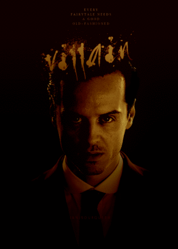
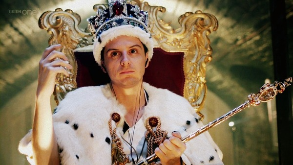
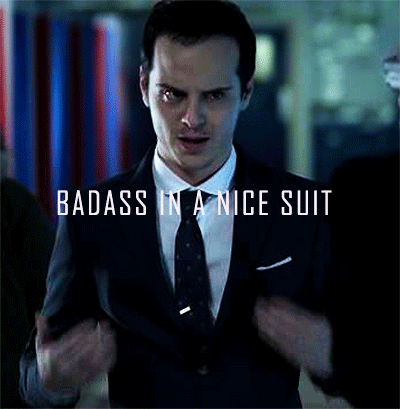
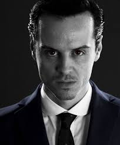
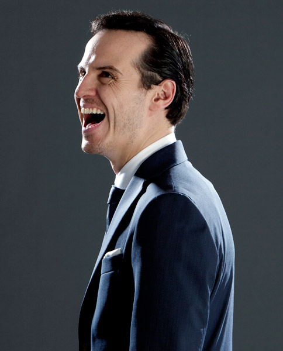
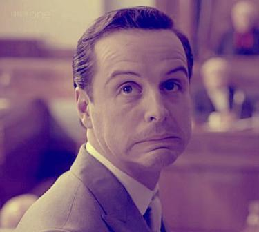

Jim Moriarity
James "Jim" Moriarty was the world's only "consulting criminal"; a stark contrast to his nemesis', Sherlock Holmes', similarly unrivalled "consulting detective" occupation. Moriarty was Sherlock's intellectual equal. A master criminal who enjoyed playing games with the world, he killed himself in order to discredit the detective.
A criminal genius, Jim Moriarty appeared to be a sadistic and psychopathic individual. He exhibited the following traits: extreme intelligence, grandiosity, incapacity for remorse, arrogance, and an unhealthy degree of self-confidence. He also appeared Machiavellian. Much like Sherlock, he had a sarcastic, cynical, albeit childish sense of humour but unlike Sherlock he was also sadistic and often spoke in a tone that would intimidate or annoy his opponents. He had an incredible capability for changing his tone of voice and behaviour several times in a single sentence for psychological warfare - ranging from serenity, humour, mockery, childish, laid-back, to violence. Because of this, Moriarty is extremely difficult to read and anticipate.
Moriarty was obsessed with Sherlock Holmes and appeared to enjoy his role as a villain. He was highly skilled at manipulation, and even Sherlock found it hard to predict Moriarty's next move. Moriarty, like Sherlock, was willing to do anything to stop himself from getting bored. He was capable of frightening mood swings. He was ruthless, and committed torture and murder in sadistic ways, and when Sherlock accused him being responsible for people's deaths, Moriarty told him 'That's what people do!', indicating that he didn't care if people lived or died.
Moriarty was also in Sherlock's mind palace, in solitary confinement and wearing a straitjacket. He taunted Sherlock but when John was mentioned, it gave Sherlock the strength he needed to recover from a serious bullet wound when he was near death. Moriarty's face was later broadcast all over England and spoke the words "Did you miss me?", forcing Sherlock to return from his exile early to work on the case.
"Every fairytale needs a good old-fashioned villain. You need me, or you're nothing." - Moriarty to Sherlock     